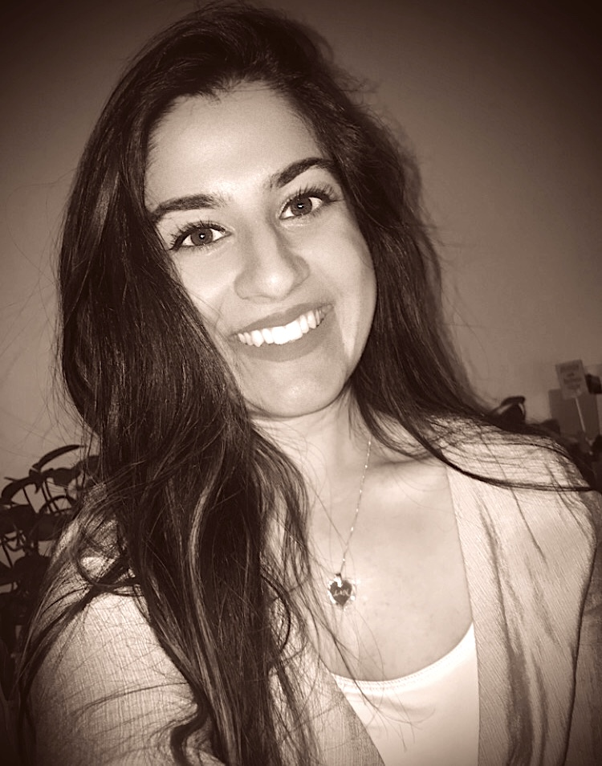

<div class="container">
    <div class="content">
        <h1 class="heading">{{heading}}</h1>
        <div class="image-field">
             </div>
        <h2 class="pt-3">{{subheading}}</h2>

        <p><i class="fas fa-graduation-cap"></i> Front End Developer Graduation at CodeFactory Vienna
        </p>

        <p>It is my passion to design and develop beautiful and magnificient Websites. </p>

        <p>Additionally I'm a Food Blogger on <a href="https://www.instagram.com/dailydoseofcuisine/"><i class="fab fa-instagram"></i></a></p>
        <p>Beside of Web designing, I love to read books, explore new Restaurants and travel around the world. I also like to play video games in my leisure time.</p>
        <p class="content_wrapper">To take a look at my projects <i class="fas fa-arrow-down"></i> </p>
        <span class="content_link"><a routerLink = "/projects"><i class="fas fa-project-diagram"></i></a></span>


    </div>
</div>